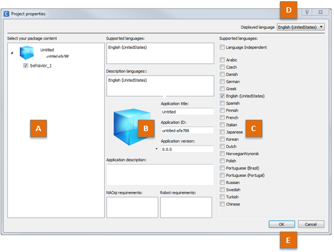
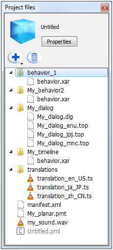

Project files panel¶
What is the Project files panel¶
- Edit the Manifest of the Application, through the Project Properties.
- Attach additional files to the current Project.
| Part | Description |
|---|---|
| A | Project icon. |
| B | Application title. Displayed in Choregraphe’s locale, or in English if the title does not exist in that locale. |
| C | Project Properties. |
| D | Project files. |
Project Properties¶
To open the Project Properties:
- Choose File > Project properties.
You can also, in the Project files panel, click the Properties button or double-click the manifest.xml file.
The layout is organized from the most general view on the left, to the most specific one on the right.
| Part | Name | Allows you to ... |
|---|---|---|
| A | Package content |
|
| B | Properties | Select one property in order to edit it. |
| C | Edition zone | Modify the content of the selected property. |
| D | Displayed language menu | Browse from page to page when the Project supports several languages. Each translated property is available to edition in each supported language. |
| E | Buttons | Close the panel validating or cancelling the modifications. |
Project property list¶
| Property | Description |
|---|---|
| Supported languages | Allows you to define if the project is Language independent or supports one or several language(s). Any language checked will be available for:
|
| Translations auto-fill for | Allows you to activate and configure the automatic generation of Translation files. To activate, check the box and select the language to use as the source text in the Translation files.
|
| Description languages | Allows you to choose the languages in which the application will be described in a human-readable or robot-speakable way. Contains at least the Supported languages, but may contain additional languages. The selected languages appear in the Displayed language menu, in order to let you browse from one language to another. They also appear when a translated property is edited.
|
| the icon | Allows you to select one Icon representing the Application. |
| Application title | Name of the Application, defined for each supported language. This field can be vocalized. |
| Application ID | The Application Identifier. Chain of characters (50 characters max) among:
Example: fever-dance_redux |
| Application version | Allows you to set the three digits of the version number. The third one is automatically incremented each time the Application Package is built. |
| Application description | Description of the Application, defined for each supported language. This field can be vocalized. |
| Robot requirements | Allows you to restrict which hardware configurations are supported by this Application. |
| NAOqi requirements | Allows you to restrict which NAOqi configurations are supported by this Application. Examples:
|
Behavior property list¶
| Property | Description |
|---|---|
| Name |
|
| Nature | Allows you to select the Behavior‘s Nature among a predefined list:
|
| Tags | Tags are unique words. If you enter multiple words separated by spaces in the widget, your input will be changed in as many tags as words. There is one tag list for each Description language. |
| Description | Description of the Behavior, defined for each Description language. This field can be vocalized. |
May start on user request |
If this box is checked, the end user will be able to launch this Behavior through the Robot App Launcher on Pepper. |
Trigger sentences |
Allows you to define which sentences can be used to trigger the Behavior by voice through the default dialog activity, for each Supported language. Design constrains: it will only work if the Behavior is an
Activity, and if the owner of the Robot has subscribed to the
This field can be vocalized. |
Loading responses |
Allows you to define, for each Supported language, which sentence the robot will say while loading the Behavior before starting it. Design constrains: the sentence will be said only if the Behavior is an Interactive Activity. This field can be vocalized. |
Permissions |
Allows you to define the permissions needed for the launching of the Behavior among a predefined list:
|
| Launch trigger condition | Allows you to define rules for an automatic launching of the Behavior. See Launch trigger conditions for more details on how to write these conditions. Note The editing zone for launch trigger conditions proposes a code completion feature similar to the one available when editing QiChat script: hit Ctrl-Space to display a list of possible completion for the current cursor’s position. It will also help you write ALMemory keys if you are connected to a robot. |

{kind=link}
{kind=link}
Vocalization of properties¶
Sometimes, the robot does not quite pronounce or hear text as expected. This is especially true for words inherited from other countries (e.g. “Angélique”, a French first name, will be badly pronounced in English).
To workaround this problem and still have a meaningful name for your application, you can use the script system.
The script system is best explained with examples:
| Scripted text | Text version (written on the store) |
Vocal version (said by the robot) |
|---|---|---|
| Angélique<henjeylik> | Angélique | henjeylik |
| “bon voyage”<bo voiage> | bon voyage | bo voiage |
| This application speaks about “Louis Quinze”<Lui Kinz> | This application speaks about Louis Quinze | This application speaks about Lui Kinz |
These fields have a speaker icon next to them in the right column to test the vocal version of the name. This icon can have several statuses:
| Icon | Means |
|---|---|
| You are ready to test the vocal version of the text in the field nearby. | |
| A problem occurred with the previous test, the text in the field nearby is probably ill-formed. | |
You cannot test the vocal version of the text in the field nearby. Make sure you have:
|
Dialog topic property list¶
| Name | Description |
|---|---|
| Topic Name | Name of the Dialog topic, read-only. |
| Topic Files | Allows you to select the Dialog topic‘s language files. It defines in which languages your Dialog topic is available. It is not recommended to edit those files. For further details, see: Dialog topic. |
Project files¶
Displays all the files contained in the current Project and allows you to add, edit and delete files.
{kind=link}
Toolbar¶
| Button | Click on this button to ... |
|---|---|
| Create or import items and files in the current Project. | |
| Delete the selected file or folder. |
File types¶
| Type | Extension | Comment |
|---|---|---|
| – Project – | ||
| Manifest | .XML | Properties of the current project. |
| Project main file | .PML | Read only file. |
| – Items – | ||
| Behavior | .XAR | Each Behavior is stored in a folder containing a .XAR file. |
| Dialog | .DLG .TOP | The .DLG file contains the list of languages supported by the Dialog. Each .TOP file contains the QiChat script for the language specified before the extension: _enu, _frf, _jpj, ... |
| Planar Move Trajectory | .PMT | Used as parameter of a Movement > Navigation > Move Along box. |
| Translation source | .TS | The .TS file contains all your localized string and their translations. There is one file for each supported language of the application. |
| Attached files | .WAV .OGG etc | The attached files can be any type of file. Example: a music used as parameter of a Multimedia > Sound > Play Sound box. For further details, see the tutorial: Using attached files. |
- Manifest
XML file gathering all the information required by the Store.
During the building of an application, the Project Properties are used to create the Manifest.